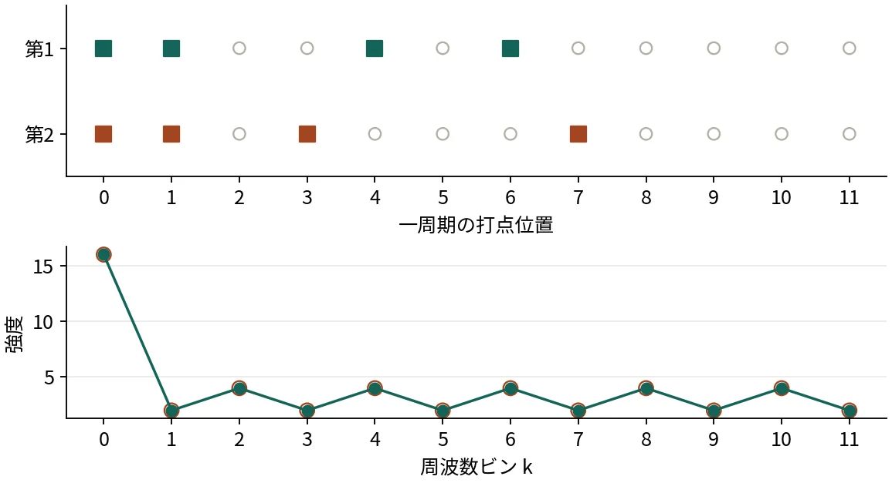

第51章 二つのリズムが同じ回折像をつくる
違う二つのリズムが、同じスペクトル強度を持つことがある（ホモメトリー）。
この章で学ぶこと
- 巡回自己相関を数える
- 強度スペクトルと自己相関が同じ情報であることを示す
- 二点の統計で区別できない配置を、三点の統計で区別する
机の上を十二等分のパルスで叩く。0から数え、第1のリズムは0・1・4・6で、第2のリズムは0・1・3・7で手を鳴らす。第1では最後の打点から次の頭まで六単位、第2では五単位空く。耳には違いがある。ところが、同じ周期を何度も正確に反復する打点列のスペクトルを計算し、各周波数の強さだけを記録する装置にかけると、二つはすべての周波数ビンで同じ答えになる。結晶に光やX線を当てて構造を推定する人にとっても、これは他人事ではない。
二点間の距離をすべて数える
一周する十二の時刻を の元とする。ある配置 に対し、時刻 に打点があれば 、なければ と記す。配置を 目盛りずらして重なる打点の個数を次式で定める。添字は一周で元に戻す。
これが巡回自己相関である。 は打点自身との一致。たとえば第1の列で の一致は の一組、第2では の一組。 の場合は、どちらの列でも半周離れた一対が双方向に数えられて2になる。差を向きなしで畳んだ距離1から6の個数は両方とも 。したがって有向の列はどちらも となる。他方、打点間の隣接間隔は第1が 、第2が 。巡回移動や逆順にしても、この二組は一致しない。違う配置が同じ差の統計を持つことをホモメトリーという。
強度の図から消えるものを証明する
各周波数ビン の複素振幅を と置く。 は虚数単位で、絶対値の二乗がここでいう強度である。実数列なので共役では指数の符号だけが替わる。積を展開し、 ごとに集めると、
ゆえに 。逆も離散フーリエ逆変換の一意性から成り立つ。離散フーリエ変換の章の直交性を使い、上式に を掛けて全 について足すと、 の項だけが12倍で残る。測定値が正確でも、逆算の結果は自己相関までである。位相を得る手がかりを加えるか、構造の候補に別の制約を置けば推定は変わる。

結晶・和音・ドラムの読み替え
等しい散乱の強さをもつ点が一次元で周期的に並ぶ理想モデルなら、遠方の散乱振幅は各点から来る波の位相付きの和に比例する。このモデルの回折強度にも上の計算が現れる。音の世界へ戻れば、十二の目盛りはひと回りの拍にも、オクターヴ内の半音にも読める。音高類集合で同じ音程類ベクトルをもつ二組でも、鍵盤で弾けば配置の違いを聴ける。結晶・和音・打点が共有するのは「点の差を数える」演算である。強度に寄与する重みが場所によって違う測定には、無重みの結論をそのまま適用できない。
聴いてみよう
耳で検算する。 伴奏のない本書の小品《十二枚の影》では、前半で第1の配置、後半で第2の配置を反復する。長い空白から冒頭の二連打へ帰るまでを指でなぞる。次に中央をまたいで同じパルスを維持する。収録は有限長で区切られているので、ファイル全体への一回のFFTでは両半分の切替も測ってしまう。上の定理の条件に合わせるには、各半分から整数個の周期を切り出すか、12個の打点位置そのものを入力する。試聴《十二枚の影》
問い
新たな測定を一つ足して二組を識別できるか。
解答を見る（先に自分で考えてから）
各打点から と の位置にも打点がある回数を数える。第1では開始点0が該当する。第2は の相手をもつ開始点が0のみで、その には点がない。二点統計で一致しても、三点の並びに問えば差が出る。実験で同じグラフが得られたときは、対象が等しいという結論の手前に「そのグラフは何を捨てたか」という問いが残る。
ここだけ押さえる
- {0,1,4,6} と {0,1,3,7} は、同じ自己相関と同じ強度スペクトルを持つ。
- 強度だけの測定では、位相の情報が失われる。
- 同じグラフが得られたら「そのグラフは何を捨てたか」を問う。
この章の資料
- C. Callender の配布資料には音程を数える図と、等しい距離の統計をもつ集合が載る。本章と有向差6の数え方を比較する。Crystallography and the Structure of Z-related Sets
- J. Mandereau ほかの論文は音楽におけるZ関係を、結晶学・群上の自己相関と同じ枠に載せる。冒頭の定義で順序付きの対を確認する。Z-relation and Homometry in Musical Distributions